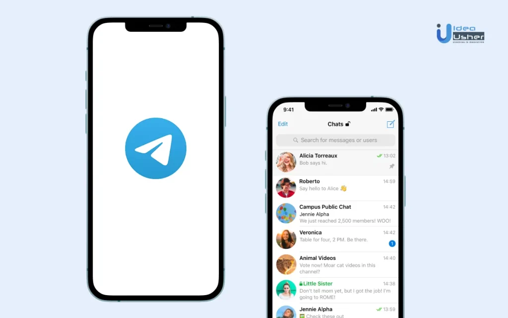

Telegram删除聊天记录对方还能看到吗？
如果你在Telegram删除了聊天记录，只有你自己的设备上的记录会被删除，对方的聊天记录依然存在，除非你使用的是秘密聊天。秘密聊天中的消息在删除后会在双方设备上都消失。如果是在普通聊天或群组中删除消息，删除操作只会影响你自己，不会影响对方的聊天记录。

Telegram聊天记录删除机制
如何删除Telegram聊天记录
- 删除单条消息：在Telegram中，长按你想删除的消息，然后点击“删除”选项。你可以选择仅删除自己设备上的消息，或者删除消息在所有设备上的记录，包括对方设备。
- 删除整个聊天记录：打开聊天界面，点击右上角的菜单按钮，选择“清空聊天”选项。这会删除聊天中的所有消息，但只会影响你自己的设备，对方的记录不受影响。
- 删除群组消息：群组管理员可以删除群组或频道中的消息。长按某条消息，选择删除。管理员可以删除群成员的消息，但不能删除管理员自己的消息。
删除消息后的效果是什么
- 对自己的设备影响：删除消息会将其从你自己的设备和Telegram云端服务器中移除，但对方的设备上的消息不会受影响，除非选择“从所有设备删除”。
- 对对方的设备影响：如果你删除了普通聊天中的消息，只会删除你设备上的记录，无法删除对方的消息内容。对方的聊天记录会保持不变。
- 消息删除的时间限制：Telegram允许用户随时删除消息，没有时间限制。删除后无法恢复，因此在删除前需要确认操作。
Telegram删除记录的隐私影响
删除消息对自己有什么影响
- 删除后的消息无法恢复：当你删除消息时，消息会从你设备和Telegram云端服务器中完全移除，无法恢复。这意味着你将无法查看或找回已删除的聊天内容。
- 不会影响聊天同步：删除消息后，删除记录只会在你的设备上生效。如果你有多个设备使用Telegram，删除消息不会影响其他设备上的聊天记录。你需要在每个设备上单独删除记录。
- 隐私风险减少：删除消息后，消息不会再存储在你设备上或云端服务器中，这可以减少设备被盗或被他人查看时泄露信息的风险。通过删除不必要或敏感的对话内容，可以提高隐私保护。
删除消息对对方有什么影响
- 对方仍能看到消息：在普通聊天中，如果你删除了消息，对方设备上的记录依然存在，除非你选择“从所有设备删除”选项。对方依然可以查看已删除的消息内容。
- 通知对方的删除行为：如果你删除了对方看到的消息，Telegram不会通知对方删除的行为。然而，如果你选择“撤回”消息，Telegram会通知对方该消息已撤回，但不会告诉对方你删除了该消息。
- 秘密聊天中的效果：如果是在秘密聊天中删除消息，消息会从双方设备上删除。这意味着在秘密聊天中删除的内容对对方同样生效，且消息会完全消失，增加了隐私保护的安全性。

使用秘密聊天的删除功能
什么是秘密聊天
- 端到端加密保护：秘密聊天是一种特别设计的聊天方式，使用端到端加密技术，确保消息仅在发送者和接收者之间传递，Telegram的服务器无法读取消息内容。它是Telegram提供的最高安全级别的通讯方式。
- 设备间不可同步：与普通聊天不同，秘密聊天消息只能在一个设备上访问。如果你切换设备，无法继续查看同一秘密聊天的历史记录，这进一步增强了对话的隐私性。
- 消息自毁功能：秘密聊天提供自毁消息功能。你可以为每条消息设置自毁计时器，消息在对方阅读后会在预设的时间内自动删除。这种方式确保了敏感信息不会长期存储，增强了数据安全性。
删除秘密聊天消息后的效果
- 删除消息在双方设备生效：如果你删除秘密聊天中的消息，消息会从你和对方的设备上完全删除。秘密聊天的设计使得删除操作对双方都有效，而不会留下任何痕迹。
- 自毁计时器与手动删除的区别：秘密聊天支持自毁计时器，消息会在设定的时间内自动销毁。即使你没有手动删除，消息也会消失。与此不同，手动删除消息则是用户主动决定删除消息，无论计时器是否已到，都会在删除后彻底消失。
- 无法恢复已删除消息：一旦在秘密聊天中删除了消息，这些消息无法恢复。与普通聊天不同，删除消息后不会保留任何备份或历史记录，这种设计是为了加强隐私保护，防止信息泄露。

Telegram如何管理已删除的消息
删除聊天记录后还能恢复吗
- 消息删除不可恢复：在Telegram中删除聊天记录后，这些消息通常是不可恢复的。Telegram的设计旨在确保删除操作有效，一旦删除，消息会从本地设备和云端服务器中彻底移除，不会再出现在你的聊天列表中。
- 云端与本地删除的区别：如果你在设备上删除消息或聊天记录，它会被从设备中移除。然而，在云存储中删除消息则是同步删除，只会影响你的账户，并不会在对方的设备上删除记录。删除消息后无法通过Telegram恢复。
- 备份与恢复的限制：尽管Telegram在某些情况下允许通过云备份恢复部分数据，但已删除的消息无法通过恢复操作找回。删除的消息一旦从服务器中清除，就无法恢复。
Telegram的消息存储方式
- 基于云的存储：Telegram的消息存储在云端，这意味着你的聊天记录可以跨设备同步，随时随地访问。然而，所有的消息和文件都存储在Telegram的服务器中，只有你和对方可以访问这些信息。
- 端到端加密的秘密聊天：对于秘密聊天，消息使用端到端加密技术传输，不会存储在Telegram的云端服务器上。秘密聊天中的消息仅存储在发送者和接收者的设备中，且有自毁功能，消息在自定义时间内自动消失，增加了隐私保护。
- 消息存储管理与隐私保护：Telegram采用先进的存储技术来管理消息，同时尽可能保障用户隐私。用户可以删除云端的聊天记录、控制哪些信息同步到设备，并且使用两步验证增强账户安全。

群组聊天中的消息删除规则
群组管理员能删除哪些消息
- 删除成员发送的消息：作为群组管理员，您可以删除群组中任何成员发送的消息。这包括文字消息、图片、视频、文件等内容。管理员可以删除不适当的消息，确保群组内容符合规定。
- 删除自己的消息：管理员不仅能删除其他成员的消息，也能删除自己在群组中发送的消息。删除自己的消息后，消息将从所有成员的设备中移除，不仅限于管理员的设备。
- 删除整个聊天记录：如果管理员希望清理群组的聊天记录，可以选择删除整个群组的聊天历史。删除操作对所有群组成员有效，可以帮助管理员保持群组清洁，去除无关或敏感的消息内容。
群组成员如何删除自己的消息
- 删除自己发送的消息：群组成员可以自行删除自己发送的消息。只需长按该消息，然后点击“删除”选项，选择“仅删除自己”即可。这样，删除操作只会影响发送者自己的设备，其他成员仍能看到该消息。
- 删除消息的时间限制：在Telegram群组中，消息可以在发送后进行删除。理论上，删除操作没有严格的时间限制，但删除消息的操作会影响其他成员的聊天体验。删除后，消息将在对方的设备上消失，但未删除的历史记录依然保留。
- 删除多条消息：群组成员可以选择同时删除多条消息。通过批量选择消息并进行删除，可以一次性清理聊天记录，特别是在处理无关或重复的消息时非常方便。然而，删除操作仍然仅对发送者自己的设备有效。
Telegram删除消息后，对方还能看到吗？
如果你在Telegram中删除了消息，删除操作只会影响你自己的设备，对方的设备仍然会保留消息内容，除非你选择“从所有设备删除”。在普通聊天中，删除的消息不会从对方的设备中删除。
删除聊天记录是否会影响群组成员的消息？
在群组聊天中，只有群组管理员可以删除其他成员发送的消息。如果你是普通成员，删除消息只能从你自己的设备中删除，其他成员的设备上的消息仍然保留。管理员删除消息时，则会影响所有群组成员。
使用秘密聊天删除消息后，是否对方还能够看到？
在秘密聊天中，删除消息后，它会从你和对方的设备上都彻底删除。秘密聊天使用端到端加密，删除操作对双方生效，因此在秘密聊天中，删除的消息对双方设备都不可恢复。
其他新闻
Telegram怎么保存原图？
在Telegram中，保存原图的方法很简单。首先，打开含有图片的聊天，点击图片进入查看模式。然后，点击右上角的 […]
2024 年 09 月 12 日

Telegram是做什么的？
Telegram是一款跨平台的即时通讯应用，提供文本、语音、视频聊天和文件共享功能。它支持加密通信，注重用户隐 […]
2025 年 01 月 31 日
电报怎么隐藏群？
要隐藏电报群，可以按以下步骤操作：打开群聊，点击群聊名称进入设置。选择“群组设置”，点击“通知与隐私”。关闭“ […]
2024 年 12 月 28 日

电报怎么设置机器人？
在Telegram中设置机器人，首先搜索并添加@BotFather，然后发送 /newbot 创建新机器人。按 […]
2024 年 11 月 01 日